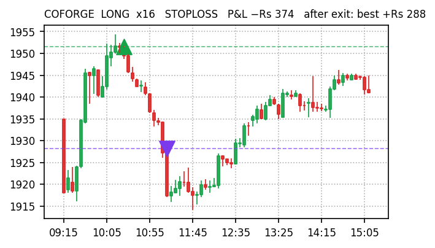
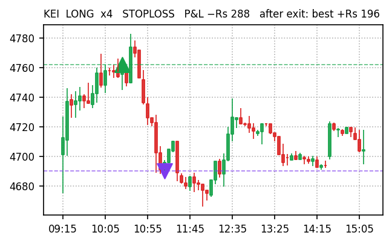
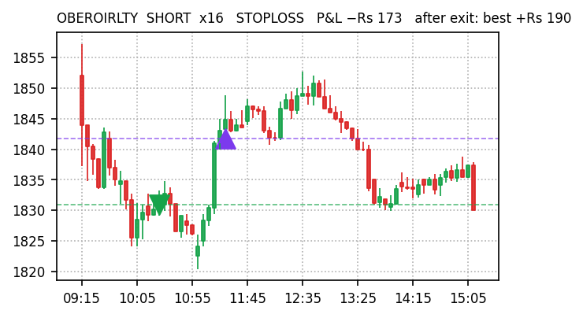
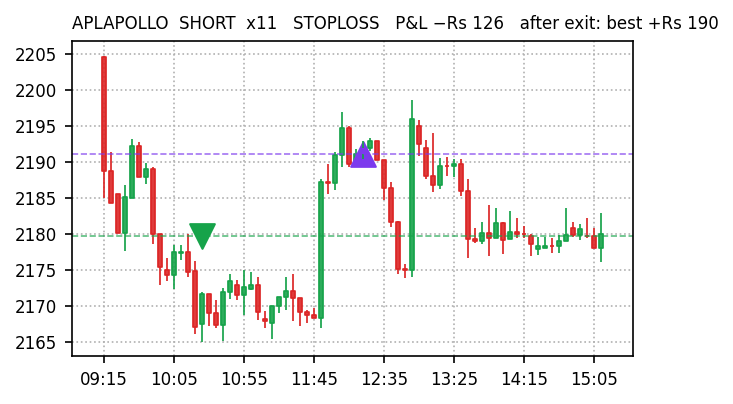
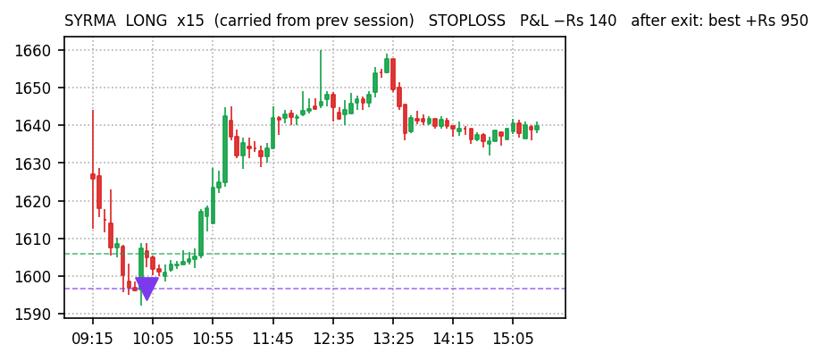
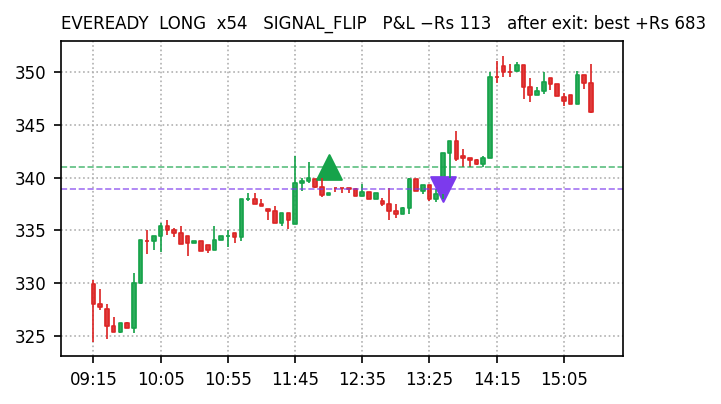
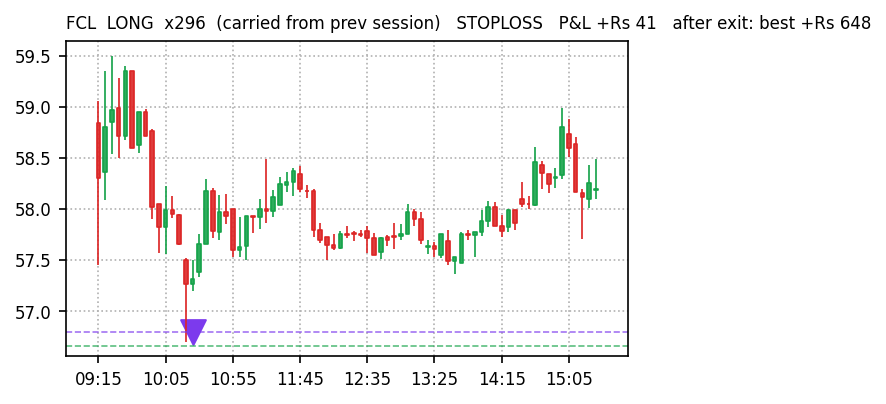
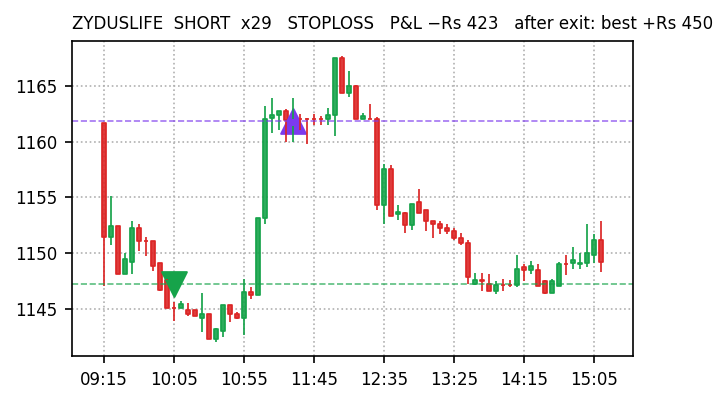

| Gross P&L | −Rs 1,609 |
| Net of costs | −Rs 2,153 (costs Rs 544) |
| Trades | 43 L 15 / S 28 |
| Win rate | 40% (17W / 26L) |
| Exit reason | # | P&L |
|---|---|---|
| STOPLOSS | 14 | −Rs 1,292 |
| SIGNAL_FLIP | 11 | −Rs 469 |
| FLAT_FORCE_EXIT | 8 | −Rs 91 |
| TIME_EXIT | 10 | +Rs 242 |
| Held everything to 15:15 instead of exiting | +Rs 183 |
| Stop-losses that later reversed our way (8) | +Rs 682 |
| Perfect-exit ceiling after our exits (upper bound) | +Rs 1,784 |
| Max favourable excursion from entry | +Rs 2,233 |
| Gross P&L | +Rs 2,224 |
| Net of costs | +Rs 1,157 (costs Rs 1,067) |
| Trades | 51 L 21 / S 30 |
| Win rate | 51% (26W / 25L) |
| Exit reason | # | P&L |
|---|---|---|
| STOPLOSS | 12 | −Rs 1,838 |
| SIGNAL_FLIP | 10 | −Rs 574 |
| FLAT_FORCE_EXIT | 18 | +Rs 212 |
| TIME_EXIT | 9 | +Rs 349 |
| TARGET | 2 | +Rs 4,075 |
| Held everything to 15:15 instead of exiting | +Rs 1,099 |
| Stop-losses that later reversed our way (10) | +Rs 2,323 |
| Perfect-exit ceiling after our exits (upper bound) | +Rs 6,042 |
| Max favourable excursion from entry | +Rs 11,222 |
Every closed trade replayed against Kite 5-minute candles after the close: P&L if held to 15:15 (hold Δ), which stop-losses reversed afterwards, and how far price travelled our way after exit (ceiling). Trades exited at the 15:15 force-close count as zero.
| Stock | Dir | Exit | Time | P&L | Hold Δ | Ceiling |
|---|---|---|---|---|---|---|
| COFORGE | LONG | STOP | 10:20→11:14 | −Rs 374 | +Rs 205 | +Rs 288 |
| KEI | LONG | STOP | 10:20→11:14 | −Rs 288 | +Rs 58 | +Rs 196 |
| OBEROIRLTY | SHORT | STOP | 10:20→11:24 | −Rs 173 | +Rs 189 | +Rs 190 |
| APLAPOLLO | SHORT | STOP | 10:20→12:18 | −Rs 126 | +Rs 123 | +Rs 190 |
| LT | SHORT | FLAT | 10:20→13:48 | −Rs 86 | +Rs 34 | +Rs 107 |
| HINDZINC | LONG | FLIP | 10:20→12:08 | −Rs 232 | −Rs 98 | +Rs 80 |
| ADANIPOWER | LONG | STOP | 10:20→11:50 | +Rs 40 | +Rs 38 | +Rs 80 |
| MARUTI | SHORT | STOP | 10:20→13:15 | −Rs 67 | +Rs 60 | +Rs 75 |
| Stock | Dir | Exit | Time | P&L | Hold Δ | Ceiling |
|---|---|---|---|---|---|---|
| SYRMA | LONG | STOP | c/f→09:56 | −Rs 140 | +Rs 648 | +Rs 950 |
| EVEREADY | LONG | FLIP | 12:05→13:33 | −Rs 113 | +Rs 394 | +Rs 683 |
| FCL | LONG | STOP | c/f→10:23 | +Rs 41 | +Rs 414 | +Rs 648 |
| ZYDUSLIFE | SHORT | STOP | 10:03→11:26 | −Rs 423 | +Rs 365 | +Rs 450 |
| NRBBEARING | LONG | STOP | c/f→12:26 | −Rs 21 | +Rs 320 | +Rs 448 |
| OBEROIRLTY | SHORT | STOP | 10:03→11:26 | −Rs 230 | +Rs 290 | +Rs 292 |
| MSTCLTD | LONG | STOP | c/f→09:56 | −Rs 233 | +Rs 33 | +Rs 248 |
| INDUSTOWER | SHORT | FLAT | 10:03→13:30 | +Rs 51 | +Rs 105 | +Rs 246 |
56 dashboard BUYs skipped by every engine: 14 rose more than 0.5% (wrong to skip), 20 fell more than 0.5% (right to skip), 20 flat. Gross upside on the wrong calls at Rs 11,000 each:
| Stock | Day move | At Rs 11K |
|---|---|---|
| NOCIL | +7.25% | +Rs 798 |
| KIRLOSENG | +5.03% | +Rs 553 |
| VENKEYS | +3.92% | +Rs 431 |
| BANDHANBNK | +3.49% | +Rs 384 |
| MAHLIFE | +2.56% | +Rs 282 |
| AUROPHARMA | +1.81% | +Rs 199 |
| SOLARINDS | +1.42% | +Rs 156 |
| TORNTPHARM | +1.18% | +Rs 130 |
| SJVN | +1.01% | +Rs 111 |
| MGL | +0.95% | +Rs 104 |
| APLLTD | +0.82% | +Rs 90 |
| SUNTECK | +0.65% | +Rs 72 |
| CROMPTON | +0.62% | +Rs 68 |
| NBCC | +0.54% | +Rs 59 |
| Total gross | +Rs 3,437 |
green marker = our entryred candle downpurple marker = our exitdashed lines = entry / exit price








| Top-10 gainers 09:35 → 15:15, −3% stop | +Rs 9,231 (4 stops of 10) |
| v5 | −Rs 2,153 |
| v5_wide | +Rs 1,157 |
Did our scoring beat dumb? Positive engine minus baseline = yes.
| Engine | Actual | live | arm0.5 | arm0.3 | fixed |
|---|---|---|---|---|---|
| v5 | −Rs 2,153 | −Rs 2,183 | −Rs 1,951 | −Rs 1,436 | −Rs 2,183 |
| v5_wide | +Rs 1,157 | +Rs 171 | +Rs 459 | +Rs 1,421 | −Rs 267 |
Same entries, stops, targets; only the trailing arm differs. Compare bands to the replayed 'live' column, not to actual.
| Live regime SIDEWAYS book | −Rs 2,035 |
| Alternate BEAR book | −Rs 996 |
| Alternate − live | +Rs 1,039 |
| Snapshots · common trades · only-live · only-alt | 34 · 29 · 36 · 30 |
Gate after 10 sessions: alternate beats live by more than Rs 2,000 cumulative net → rebuild the classifier.
Sources: docs/paper-trades/*/2026-09-08.json · Kite historical 5-min · docs/reports/missed-trades-2026-09-08.md. Paper trading only, no real orders.